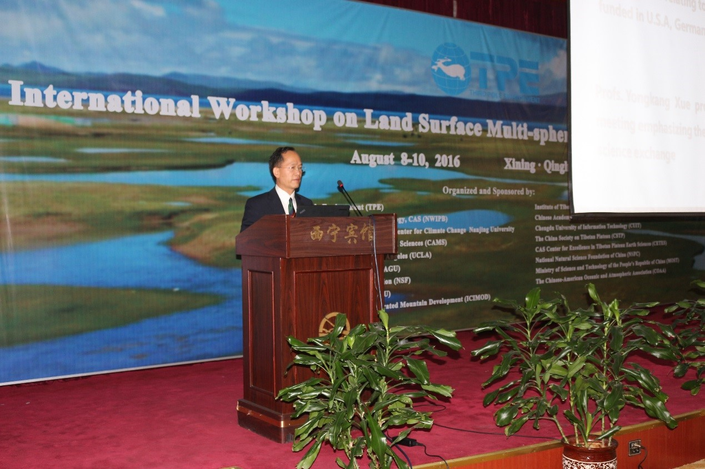
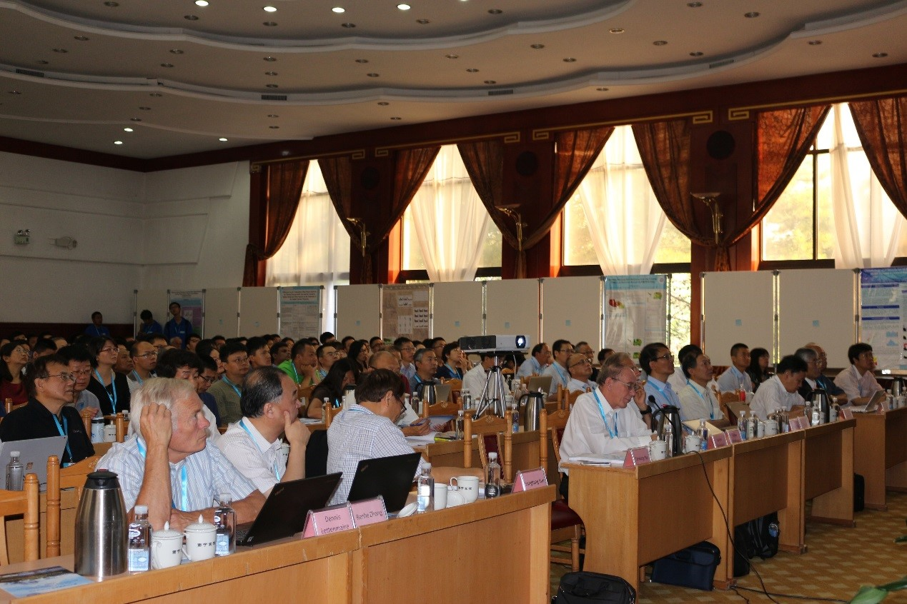
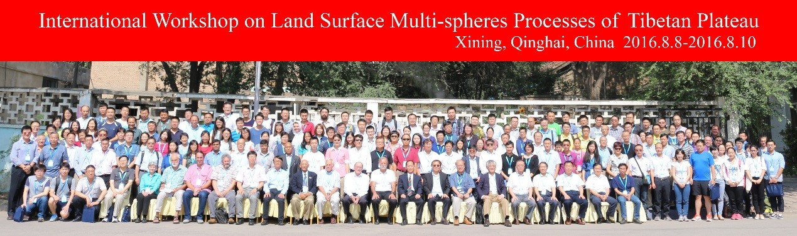

2016年8月8日至10日，由“第三极环境（TPE）”国际计划等联合主办的“青藏高原地表多圈层过程国际研讨会”在西宁顺利召开。会议深入探讨了当前青藏高原研究中的热点问题，总结了现有研究中的亮点和不足，提出了未来青藏高原研究的发展方向和研究方法。
来自中国、美国、德国、瑞典、荷兰、加拿大、日本、韩国、尼泊尔、孟加拉国、伊朗等十多个国家的200多位知名科学家和青年学者参加了会议。TPE科学委员会主席、中国科学院姚檀栋院士，TPE科学委员会联合主席、美国国家科学院Lonnie Thompson院士和德国科学院Volker Mosbrugger院士，以及瑞典皇家科学院陈德亮院士、中国科学院张人禾院士、崔鹏院士、陈发虎院士、美国加州大学洛杉矶分校薛永康教授等国内外知名专家参加了本次研讨会。
会议开幕式由姚檀栋院士和薛永康教授主持。姚檀栋院士对与会的科学家表示欢迎，并介绍了青藏高原的重要研究价值和研究意义，以及“第三极环境（TPE）”国际计划的发展与演化。本次研讨会为期三天，共分为全体会议、平行会议、海报展示以及总结讨论四个部分。来自中国、美国、德国、瑞典、日本的11位科学家围绕青藏高原气候变化、冰川融化、地表水文过程模拟、东亚季风演化、地理生物多样性、地表过程与亚洲季风的相互作用、季节性波动对青藏高原涡旋的影响、大尺度大气环流分类及其对降水变率的影响、高山灾害风险评估和管理等主题做了大会主旨报告。
此外，本次会议还围绕“青藏高原地表多圈层过程”的主题，在九个分会场进行了深入探讨。分别是：“第三极环境”、“对青藏高原大气过程的区域尺度和全球尺度的理解”、“水循环和水资源”、“青藏高原冰冻圈变化以及水文响应”、“青藏高原大气和地表过程模拟”、“青藏高原气溶胶及其气候影响”、“第三极地表过程的遥感监测”、“第三极古环境”、“气候变化对青藏高生态系统的影响”。共有近百位科研人员做了学术报告。最后，各分会场分别由代表进行总结报告，介绍该分会场讨论的主要内容、结论与下一步研究的建议方向。
本次研讨会系统地探讨了青藏高原多圈层的关键科学问题，来自多国的科学家深入地交流了现有的研究成果，并就今后可能展开的合作研究进行了热烈讨论，为未来的青藏高原研究提供了新的视角与思路。

姚檀栋院士致辞

会议现场

大会合影